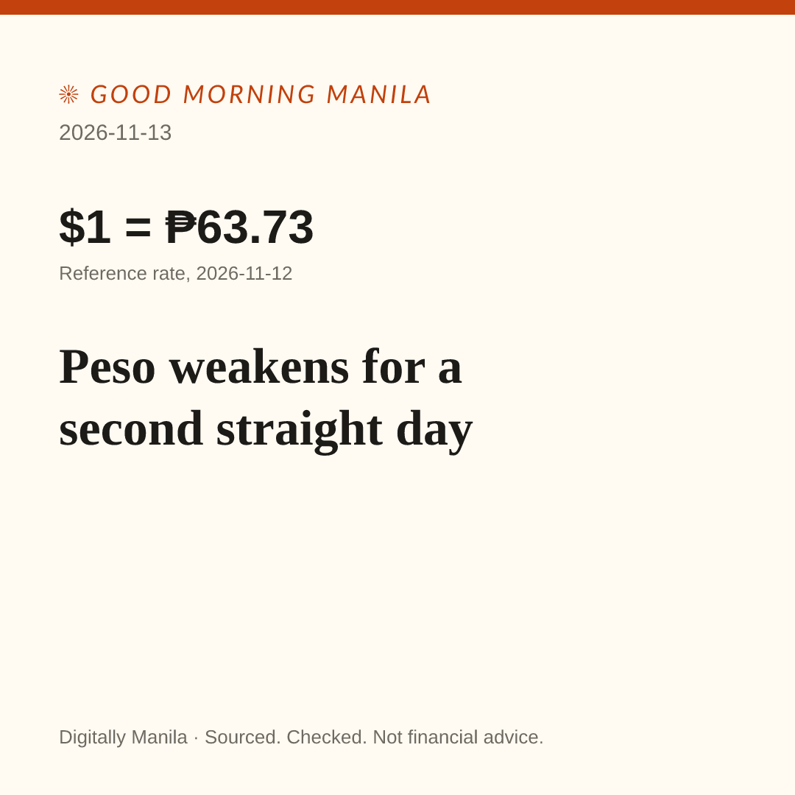

Post for Digitally Manila, 2026-11-13
Read it all first. Nothing here posts by itself. Edit freely.
1. Image

Save image On a phone: press and hold the image, then Save.

2. Short post (2,014 characters, no links)
3. First comment: sources (3,567 characters)
Post this as the first comment right after posting, so every claim keeps its source.